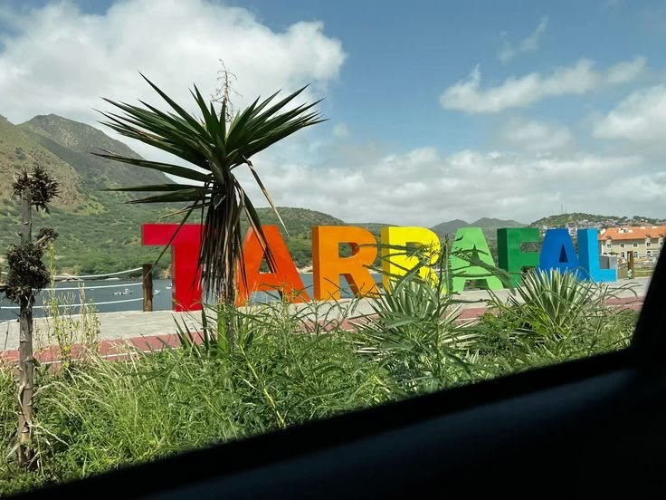

Fica na Santiago Island ao norte
Lindas praias
Hotel King Fisher e suas cavernas underwater
Tarrafal is a small town in the northern part of Santiago Island, Cape Verde. It is known for its beautiful beaches and clear waters, making it a popular destination for tourists seeking relaxation and water activities.